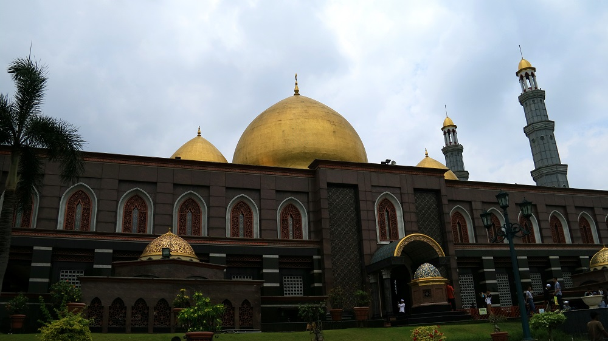
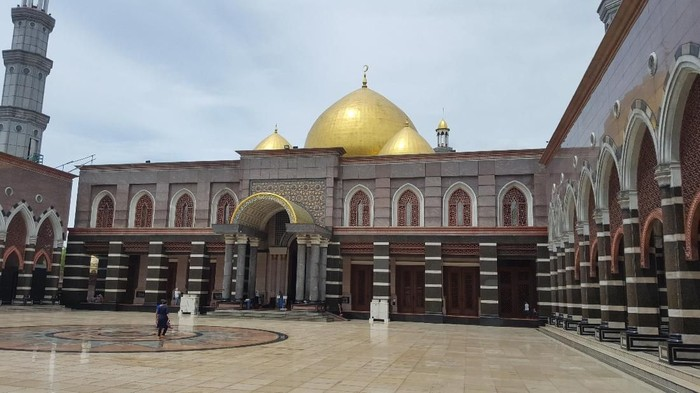

Wisata Rohani Masjid Kubah Emas
 

Fasilitas
Masjid yang memilik luas sekitar 8.000 meter dan luas keseluruhan kawasan masjid 70 hektare. Terletak di Jalan Meruyung Raya,Limo, Depok. Memiliki ciri khas kubah lima buah yang berlapis emas dan interior yang menambah kesan mewah untuk masjid ini. Lampu gantung yang berada di dalam masjid, hiasan yang sengaja Ibu Haji Dian sang pemilik masjid tersebut membeli lampu itu di luar negri.
Masjid ini tidak hampir setiap hari buka untuk umum dan memiliki jam buka tertentu. Banyak terdapat CCTv untuk memantau keadaan sekitar masjid dan pengamanan security yang ketat. Untuk pengunjung tidak dikenakan biaya masuk kecuali membawa kendaraan dan berparkir.
Alamat&Peta Lokasi

"Alhamdulillah bisa kesini maskotnya kota depok"

"maaf ya ibu yang dagang saya nawarnya kebangetan ehehe"

"saya orang depok baru pertama kesini karena ada tugas ternyata suasana masjid nya sebagus itu"